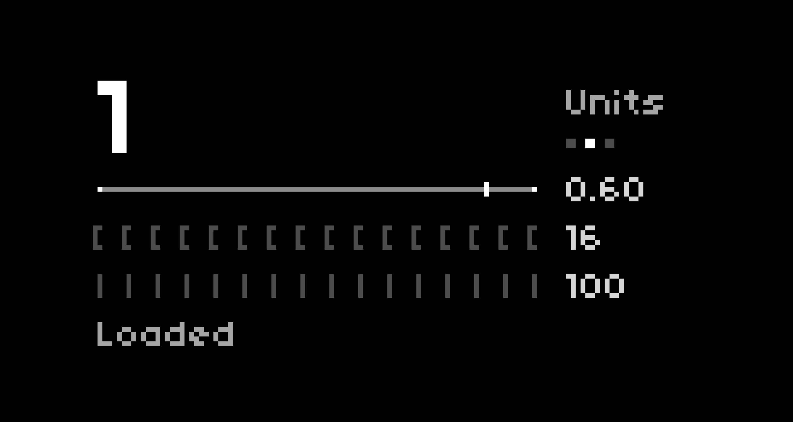
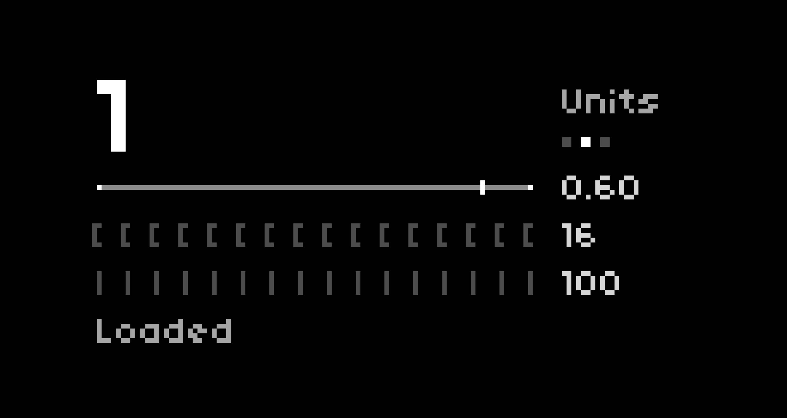

About
Between 2018 and 2022, I developed three apps for norns, an open-source sound computer. Written in Lua, these apps helped me learn the fundamentals of programming, and launching them publicly allowed me to take on other project management duties such as user testing, code maintainability, and documentation. With the support of a wonderful creative community, my apps were adopted by hundreds of musicians around the world and found their way into a variety of musical projects.
Challenges
The development of these apps — while definitely challenging — presented so many learning opportunities. As a complete amateur (and solo) developer, it was a little hair-raising to see sudden and widespread adoption, but that helped me improve my code and design immeasurably. And with hundreds of people using my apps within a day or two of launch, I had to learn how to prioritize feature requests and, naturally, bug reports.
 
